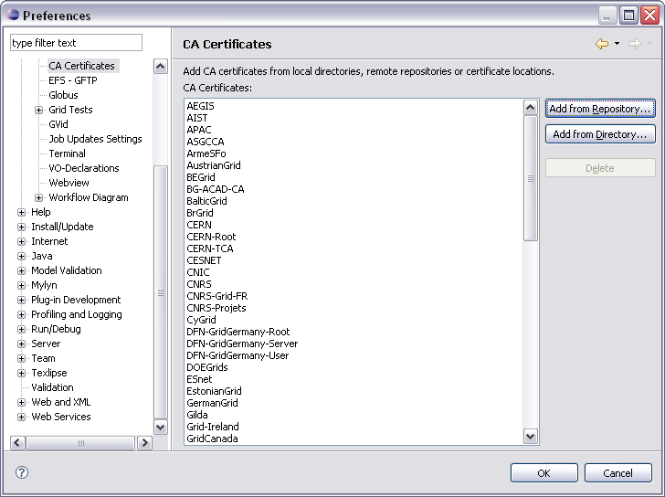
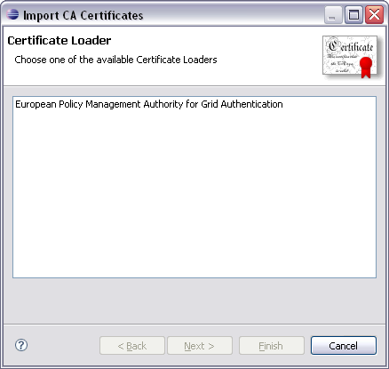
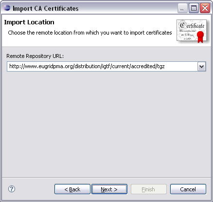
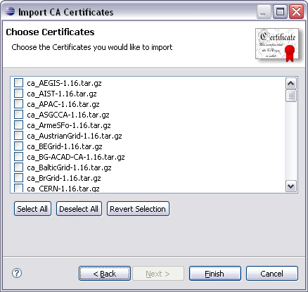
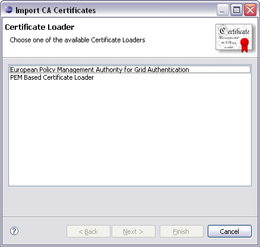
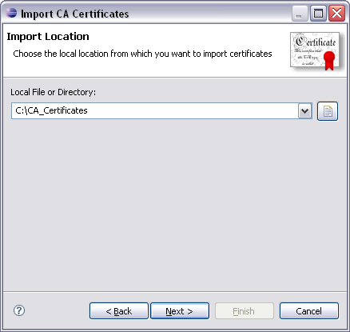
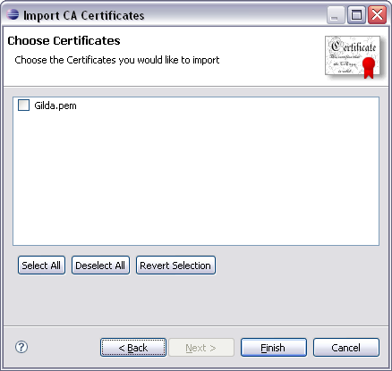

g-Eclipse > CA Certificates preference page.
This page contains a list of all currently available CA certificates.
g-Eclipse > CA Certificates preference page.
This page contains a list of all currently available CA certificates.Certification Authority (CA) certificates are used to verify the identity of a CA on the client side. The g-Eclipse framework currently comes with support for PEM-encoded certificates. In order to access the Grid, it is often needed to import these certificates into g-Eclipse. This help section describes how such certificates can be imported.
The easiest way to import CA certificates is from a remote repository.
Currently, g-Eclipse supports the EUGridPMA repository that can be found
at http://www.eugridpma.org. To import
certificates from such a repository you have to open the
g-Eclipse > CA Certificates preference page.
This page contains a list of all currently available CA certificates.

To import more certificates from a remote repository, click Add from Repository.... This will open the CA Certificate Import Wizard.

On the first page of this wizard, you can select a certificate loader that is used to import certificates. By default, g-Eclipse comes with a certificate loader for certificates hosted by the European Policy Management Authority for Grid Authentication (EUGridPMA). After selecting a loader and clicking Next, a wizard page for specifying a repository URL will open.

In the Repository URL Wizard Page you have to specify a valid URL pointing to a location where the CA certificates can be found. Depending on the certificate loader you have chosen on the previous wizard page, this field may already be initialized with a vaild URL. On clicking Next, the certificate loader is triggered to query the given URL for available certificates. If no error occurs while contacting the specified URL, the next wizard page will appear with a list of all certificates that are ready to be imported.

Now you can simply select the check box for each certificate you would like to import and click Finish. After that the selected certificates are downloaded, decompressed and imported into g-Eclipse. The preference page will now display the newly imported certificates.
To import certificates from a local directory, click Add from Directory.... This will open the CA Certificate Import Wizard.

On the first page of this wizard you can select a certificate loader that is used to import certificates. By default, g-Eclipse comes with a certificate loader for certificates hosted by the European Policy Management Authority for Grid Authentication (EUGridPMA) as well as a certificate loader for simple PEM-based certificates. After selecting a loader and clicking Next, a wizard page for specifying a local directory will appear.

In the Local Directory Wizard Page you have to specify a valid directory pointing to a location where CA certificates can be found. On clicking Next, the certificate loader is triggered to query the given directory for available certificates. If no error occurs while listing the certificates contained in the directory, the next wizard page will appear with a list of all certificates that can be imported.

Now you can simply select the check box for each certificate you would like to import and click Finish. After that the selected certificates are imported into g-Eclipse. The preference page will then display the newly imported certificates.
To delete one or more certificates, simply open the
g-Eclipse > CA Certificates preference page,
select the certificates you would like to delete and click
Delete. A dialog will then appear where you have to confirm that
you really would like to delete the selected certificates. After that,
the selected certificates are permanently removed from the certificate list.